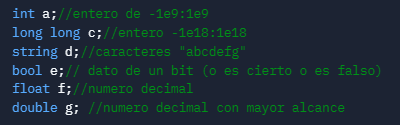
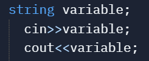

como se conoce con normalidad, en algunos algoritmos se pide que se incerte o simplemente que se se muestre algun dato o cosas por el estilo

cada tipo de dato tiene una forma de declarar, se puede asimilar con el conocimiento de ciertas cosas y su clasificacion. esto ayudará a la computadora a poder distinguir entre las operaciones posibles

el "cin" y "cout" son comandos que se utilizan para leer o imprimir un dato. Siempre deben de ir acompañado de los simbolos "<<" para la salida de datos, mientras que para la entrada son al contrario ">>"